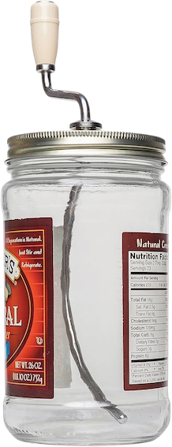

Simply stir and enjoy!
Stir it smooth.
Skip the mess.
Natural peanut butter separates in the jar. Grandpa Whitmer makes hand mixers designed to blend the oil back into the peanut butter so it's easier to stir and ready to spread.

A better way to stir.
* Easy to use
* No oil splashes
* Easy to clean
* Made with quality in the USA
A few questions to mix it up
What does a peanut butter mixer do?
It stirs separated natural peanut butter to mix the oil back through the thick peanut butter.
How do I choose the right model?
Check your jar size and shape against our Jar Sizer. Compatibility can vary by brand.
Can I get replacement parts?
Yes! Look for the parts listed for your specific mixer model and purchase them here.
Ready to find your mixer?